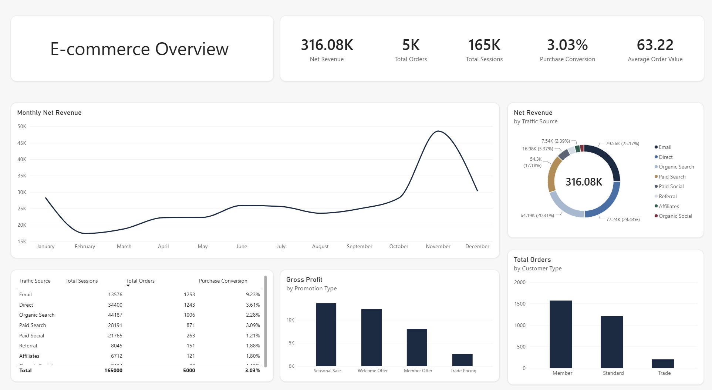
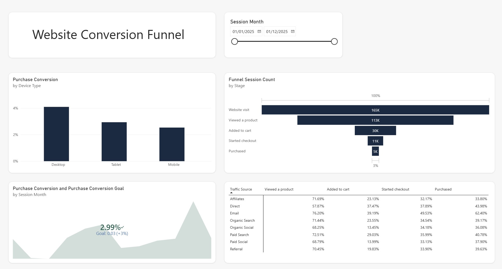
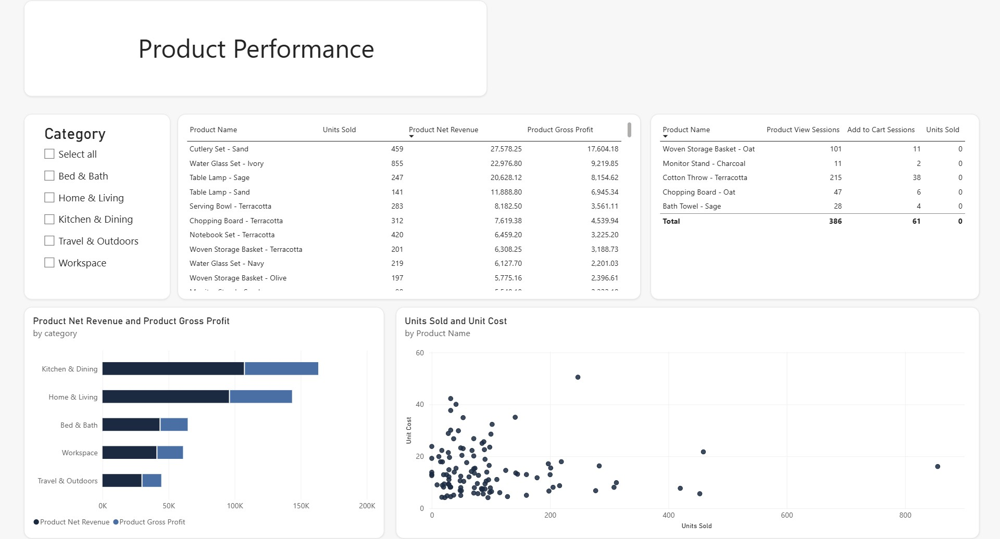

2025 E-commerce Performance Analysis
SQL | Google BigQuery | Power BI
Project Overview
This project explores performance metrics for a fictional UK homeware retailer. The report follows web activity, product performance, and a full e-commerce overview of how the platform is performing. For this I prepared the data, modelling it into a relational database and built a three-page Power BI report.
Tools & Data Sources
- SQL: Relational database modelling.
- Google BigQuery: Data storage.
- Power BI: Interactive dashboard development.
The synthetic dataset covers January to December 2025 and includes 165,000 sessions, 5,000 completed orders across 110 different products.
Data Cleaning & Preparation
The database was already prepared for analysis, however I did checks for all foreign-key relationships and found zerp unmatched IDs. In Power BI, I set up the filter path from sessions to orders so that filters such as traffic source and device could also update sales measures. I created a new table in Power BI to list the funnel stages in the order a user goes through them This was so I could show how many users reached each stage and what percentage moved onto the next.
Analysis & Visualisation
E-commerce Overivew
Summarises net revenue orders, sessions, purchase coversion and average order value. Displays visualisations covering different customer types, promotion types, different device types and a time series showing monthly net revenue.

Website Conversion Funnel
Tracks how many visits reach product view, cart, checkout and purchase. The date slider and breakdowns by device and traffic source make it possible to compare where visits drop off.

Product Performance
Compares revenue and gross profit across product categories. A scatter chart plots product price against units sold, showing the most and least successfull products. The category slider allows users to compare several categories at will, and table shows the products with zero units sold.

Key Findings
- 5,000 of 165,000 sessions ended in a purchase, giving a purchase conversion rate of 3.03%.
- The biggest drop-off came after shoppers viewed a product. Only 26.45% of sessions that reached this stage went on to add a product to the cart.
- The store generated £316,075.03 in net merchandise revenue.
- Email ranked fifth for total sessions but generated the most net revenue of any traffic source. It had a purchase conversion rate of 9.23%.
- Desktop had the highest purchase conversion rate of any device at 4.09%.